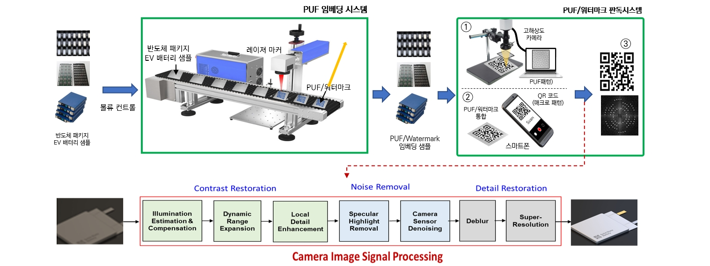

PROJECT 01
위변조 공격에 강인한 물리적 복제 불가능 PUF·블록체인 융합보안 기술개발

Introduce
- 반도체,배터리 위변조 방지 및 위조 의약품 차단을 위한 보안 기술
- 물리적 복제가 불가능한 비가시성 레이저 패턴을 임베딩 후 카메라로 검출/검증하는 시스템 개발
Objective
- 비가시성 레이저 패턴의 카메라 비전 인식 기술 개발
- 패턴 검출 성능향상을 위한 후처리 기반 카메라 ISP 기술 개발
Vision AI Laboratory conducts government-funded and industry-collaborative projects for deployable AI technologies.
PROJECT 01
